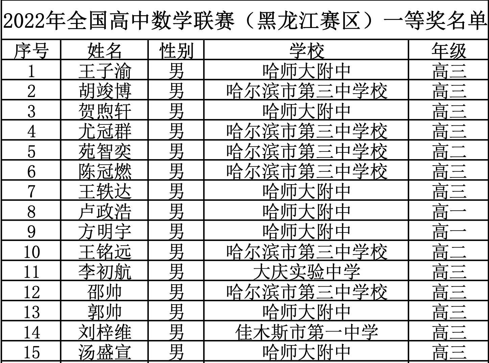
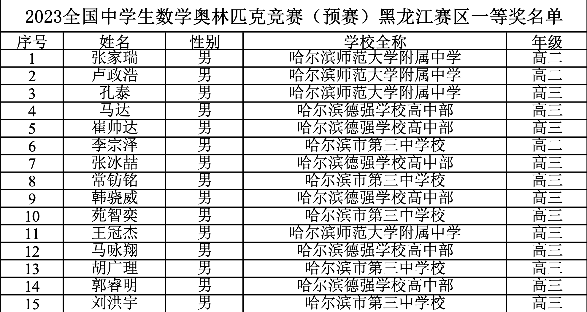

Yuan Zhiyi (苑智奕)
I am a sophomore at the University of Hong Kong, majoring in Financial Technology (School of Computing and Data Science).
- Currently a Research Assistant at The University of Hong Kong, working on online learning, stochastic optimization, and algorithmic game theory, with the main proofs formally verified in Lean 4.
- Recently completed a Quantitative Researcher internship at Turing Fund Management 's internal AI Systematic Investment Lab (A-share factor mining & self-evolving alpha-mining agents); previously Quantitative Researcher at Grace Investment Machine (GIM) (futures factors & the multi-agent CogAlpha framework).
- Third author of “When Better Gets Worse: Improvement Fidelity for Self-Improving Agents in Adaptive Worlds” (under review at ICLR 2027), with Georgia Tech & MIT. Silver medalist at the Chinese Mathematical Olympiad (CMO); Kaggle Silver Medal winner (NFL Big Data Bowl 2026, Top 4.8%).
My interests lie at the intersection of quantitative finance, machine learning, and algorithmic trading — using mathematical rigor and data-driven approaches to generate alpha.
Interests
- Reinforcement Learning & Online Learning
- Algorithmic Game Theory
- Quantitative Finance & Alpha Mining
Education
-
BASc in Financial Technology
The University of Hong Kong, 2024–2028
News
- 2026.09 Completed Quantitative Researcher internship at Turing Fund Management (AI Systematic Investment Lab, Shanghai).
- 2026.08 Started as Research Assistant at The University of Hong Kong, working on online learning, stochastic optimization, and algorithmic game theory.
- 2026.06 Started remote RL research with Georgia Tech & MIT; third author on a paper now under review at ICLR 2027.
- 2026.04 Joined Turing Fund Management (Shanghai) as Quantitative Researcher.
- 2026.01 Joined Grace Investment Machine (GIM) as AI Quant Researcher.
- 2026.01 Achieved Kaggle Silver Medal in NFL Big Data Bowl 2026 — Top 4.8% (142/2980).
- 2025.12 Started AI Development internship at Capgemini China (Shanghai).
- 2025.02 Joined Wanxin Rongzhi Private Equity as AI Investment Analyst.
- 2024.09 Joined The University of Hong Kong, majoring in Financial Technology.
- 2023.11 Awarded Silver Medal at the Chinese Mathematical Olympiad (CMO), ranked 371/653.
- 2023.09 Ranked 10th Place in Heilongjiang Province at the Chinese High School Mathematics League.
- 2022.09 Ranked 5th Place in Heilongjiang Province at the Chinese High School Mathematics League.
Education
The University of Hong Kong
BASc in Financial Technology · Second Major in Mathematics
School of Computing and Data Science
Sep 2024 – Jun 2028 · Hong KongCoursework: Machine Learning, Deep Learning, Algorithms & Data Structures, Statistical Learning, Stochastic Processes, Optimization Theory, Numerical Analysis, Financial Mathematics, Operations Research, Probability Theory, Linear Algebra, Discrete Mathematics, C++ & OOP, Python
Experience
Research Assistant
The University of Hong Kong
- Research in theoretical computer science on online learning, stochastic optimization, and algorithmic game theory, with an emphasis on sequential decision-making under partial feedback.
- Working on improved regret guarantees (upper and lower bounds) for an online stochastic optimization problem, with the main proofs formally verified in Lean 4 (manuscript in preparation).
Research Assistant
Research on Reinforcement Learning, with Georgia Tech & MIT (Remote)
- Third author of When Better Gets Worse: Improvement Fidelity for Self-Improving Agents in Adaptive Worlds (under review at ICLR 2027), on whether proxy-verified policy improvements survive deployment.
- Experiment Design: designed the benchmark protocols in Melting Pot, OpenSpiel (Leduc, Kuhn), and MPE2, including adaptation settings, candidate sets, and HF budgets; a preregistered 30-seed Melting Pot study (21,120 episodes) showed that stronger opponent response widens the proxy–deployment gap, with disjoint proxy and deployment optimal sets in 51 of 90 held-out roots.
- Algorithm Implementation & Improvement: implemented PIVOT and the Uniform, LUCB, and Global-VOI baselines; diagnosed failure cases via noise and single-factor ablations and refined the method.
Quantitative Researcher, AI Systematic Investment Lab
Turing Fund Management · Shanghai
- Quantitative researcher at a quant fund with ~23B AUM; joined its internal AI Systematic Investment Lab in June. Worked on medium- and low-frequency A-share price-volume factors, alternative-data factors, agents for discretionary research, and signal optimization.
- Factor Mining: developed daily A-share factors from daily and minute-level data; multiple cross-sectional factors achieved annualized Sharpe ratios of approximately 2 and Rank IC above 0.015 in the CSI All Share universe, with the top quintile delivering > 15% full-history post-fee excess return and no clear decay over the past three years.
- Agent Development (RL): explored self-evolving agents for alpha mining via a multi-agent ReAct loop of hypothesis, miner, auditor, and distiller roles — a UCB bandit allocated trials across hypotheses, a factor graveyard with vector deduplication stored failures, and weekly distilled heuristics fed back into mining; candidates passed a five-stage pipeline from static audit to full backtests with deflated Sharpe.
- Alternative Data Processing: contributed to an alpha-capture system for external researchers, covering data processing, text processing, and signal construction.
Quantitative Researcher
Grace Investment Machine (GIM) · Hong Kong
- Quantitative researcher at a fintech and quantitative start-up, focused on AI agents for futures investment strategies and medium- and low-frequency futures factors.
- Agent Development: contributed to the development, experimentation, and production deployment of CogAlpha, a multi-agent framework, including its agent loop and core framework.
- Factor Mining: developed daily futures factors from daily and minute-level data; multiple time-series factors achieved Sharpe ratios above 1.5.
AI Developer
AI Investment Analyst
Projects
NFL Big Data Bowl 2026 — Player Trajectory Prediction Kaggle Silver
- Black-Scholes–inspired drift-correction framework: Modeled trajectory prediction analogously to GBM discretization — injected kinematic priors (constant-velocity drift, receiver target attraction, defensive mirroring) as geometric baseline features into a Spatial-Temporal Transformer. Frame-wise displacement via cumsum integration, isomorphic to Euler-Maruyama discretization of Itô integrals.
- Greeks-inspired feature engineering: 167-dim features including velocity error (Δ analogy), required acceleration (Γ), directional cosine alignment; exponential-kernel neighbor aggregation wij = e−d/τ modeling local field potentials across 22-player interactions.
- Implied-volatility temporal loss: Exponentially-decaying Temporal Huber Loss encoding uncertainty-diffusion prior (analogous to σ√(T−t) term structure); 10-fold GroupKFold ensemble.
Competitions & Awards

